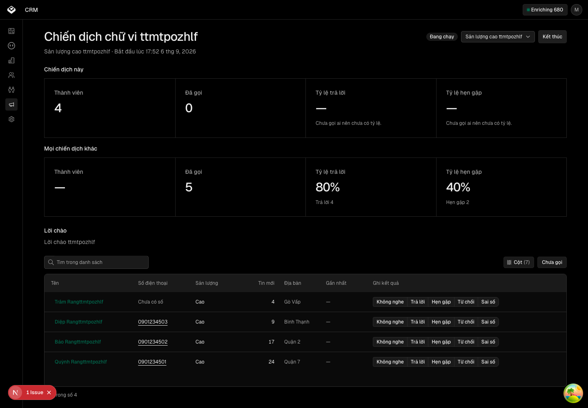
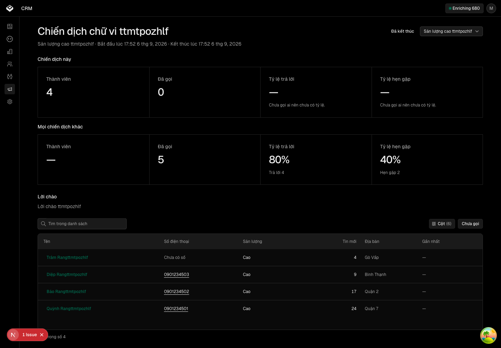
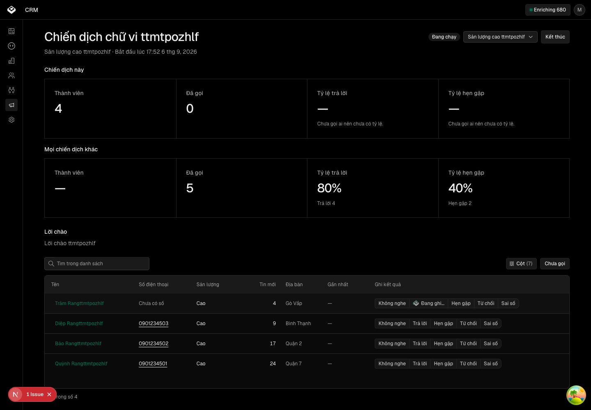
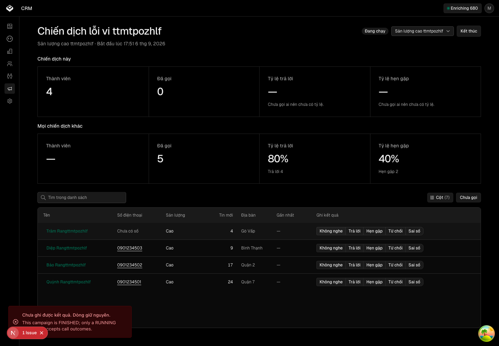
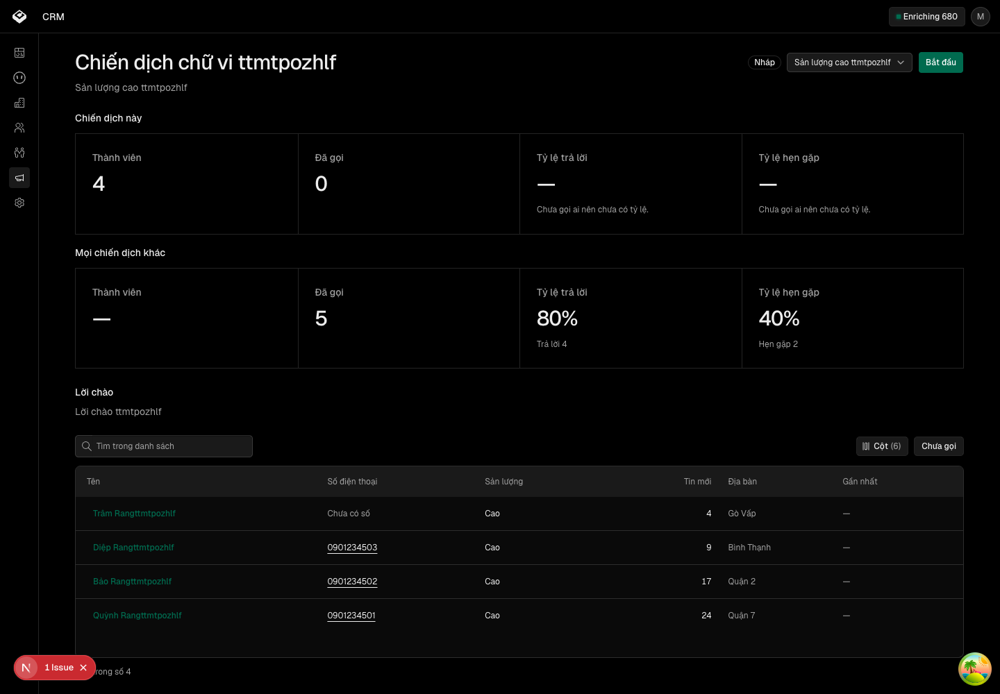
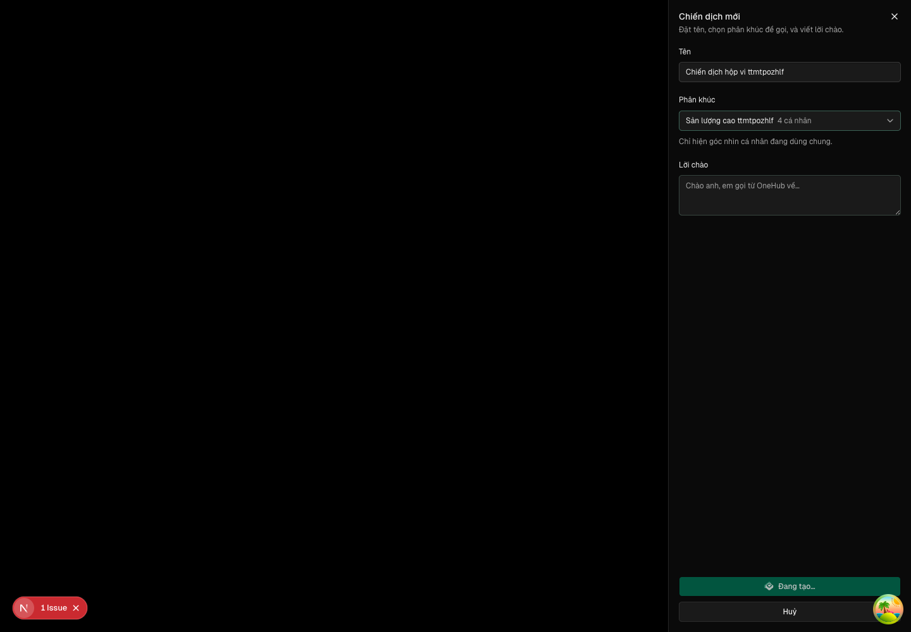
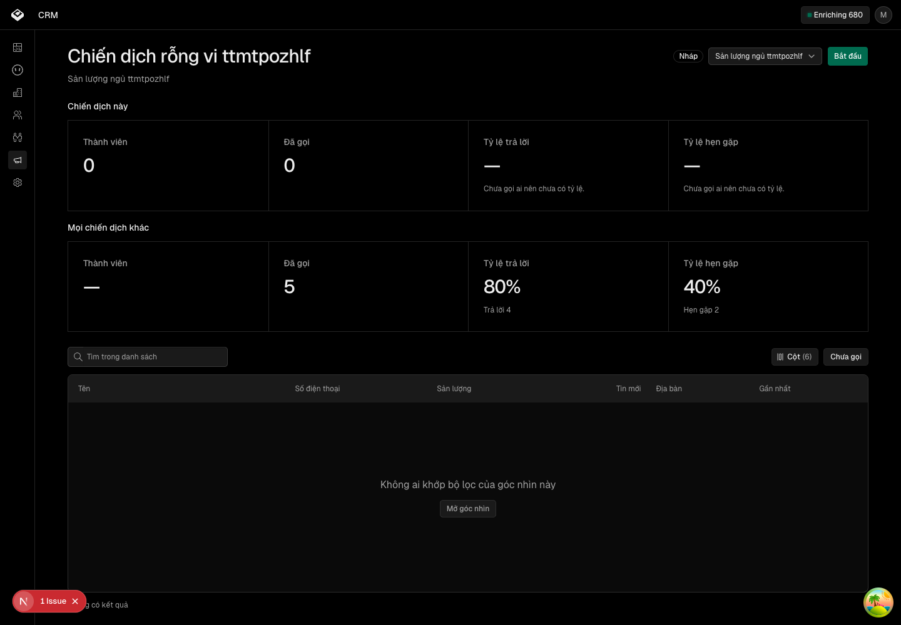

Đội tiếp thị chạy trọn một chiến dịch tuyển đối tác trong CRM — phân khúc, làm giàu, nhắm, tiếp cận, đo
Các eval
| Eval | Tiêu chí | Loại | Verdict | run_id | verified_at |
|---|---|---|---|---|---|
| E1 | AC-1 | test | PASS | mtponxgxq185 | 2026-09-06T10:45:36Z |
| E2 | AC-2 | test | PASS | mtponxgxq185 | 2026-09-06T10:45:36Z |
| E3 | AC-3 | test | PASS | mtponxgxq185 | 2026-09-06T10:45:36Z |
| E4 | AC-4 | test | PASS | mtponxgxq185 | 2026-09-06T10:45:36Z |
| E5 | AC-5 | test | PASS | mtponxgxq185 | 2026-09-06T10:45:36Z |
| E7 | AC-6 | test | PASS | mtponxgxq185 | 2026-09-06T10:45:36Z |
| E8 | AC-7 | test | PASS | mtponxgxq185 | 2026-09-06T10:45:36Z |
| E10 | AC-8 | test | PASS | mtponxgxq185 | 2026-09-06T10:45:36Z |
| E11 | AC-9 | test | PASS | mtponxgxq185 | 2026-09-06T10:45:36Z |
| E13 | AC-10 | test | PASS | mtponxgxq185 | 2026-09-06T10:45:36Z |
| E14 | AC-11 | test | PASS | mtponxgxq185 | 2026-09-06T10:45:36Z |
| E16 | AC-12 | test | PASS | minted-tiep-thi-tuyen-doi-tac-E16-r4 | 2026-09-06T10:45:36Z |
| E17 | AC-13 | script | PASS | minted-tiep-thi-tuyen-doi-tac-E17-r4 | 2026-09-06T10:45:36Z |
| E18 | AC-14 | script | PASS (MANG SANG VÒNG 3) | minted-tiep-thi-tuyen-doi-tac-E18-r3 | 2026-09-05T04:10:00Z |
| E19 | AC-14 | judgment | UNCERTAIN → ĐẠT (NGƯỜI) — MANG SANG VÒNG 3 | — | — |
| E22 | AC-13 | script | PASS | mtpoq40d6a53 | 2026-09-06T10:45:36Z |
| E24 | AC-16 | test | PASS | mtponxgxq185 | 2026-09-06T10:45:36Z |
| E25 | AC-12 | test | PASS | minted-tiep-thi-tuyen-doi-tac-E25-r4 | 2026-09-06T10:45:36Z |
| E6 | AC-6 | ui-check | PASS | minted-tiep-thi-tuyen-doi-tac-E6-r4 | 2026-09-06T10:51:56Z |
| E9 | AC-8 | ui-check | PASS | minted-tiep-thi-tuyen-doi-tac-E9-r4 | 2026-09-06T10:51:56Z |
| E12 | AC-10 | ui-check | PASS | minted-tiep-thi-tuyen-doi-tac-E12-r4 | 2026-09-06T10:51:56Z |
| E15 | AC-12 | script | PASS | ttmtpozhlf | 2026-09-06T10:53:11Z |
| E20 | AC-15 | script | PASS | minted-tiep-thi-tuyen-doi-tac-E20-r4 | 2026-09-06T10:53:39Z |
| E21 | AC-15 | script | PASS | minted-tiep-thi-tuyen-doi-tac-E21-r4 | 2026-09-06T10:53:31Z |
| E23 | AC-16 | ui-check | PASS | minted-tiep-thi-tuyen-doi-tac-E23-r4 | 2026-09-06T10:53:22Z |
Chi tiết từng eval
PASS E1 · test
AC-1: Given cổng tiếp nhận có khoá bí mật đúng và một lô từ 1 đến 500 mục hợp lệ từ nhatot, When gửi lô, Then mỗi mục thành đúng một bản ghi cá nhân nguồn «sàn» với chín trường tuỳ chỉnh mang đúng giá trị của mục, và phản hồi báo đúng số tạo và số cập nhật.
Bài chạy: "AC-1 · chín trường mang đúng giá trị của mục — ma trận toàn phần", "AC-1 · ba trường chọn mang đúng nhãn của mục", "AC-1 · nhãn tuỳ chọn lệch thì tiếp nhận ném lỗi gọi tên trường và nhãn" (apps/api/test/listing-ingest.integration.spec.ts) 27 pass 0 fail 122 expect() calls Ran 27 tests across 5 files. [973.00ms] test-run: dropped crm_mtponxgxq185_test
PASS E2 · test
AC-2: Given một lô đã tiếp nhận, When gửi lại cùng lô với số tin đổi, Then không cá nhân nào được tạo thêm, số tin và mốc «sàn cập nhật lúc» đổi theo, tổng số cá nhân nguồn «sàn» không tăng; mục có số điện thoại thì đè số, mục vắng số điện thoại thì **giữ nguyên** số đang có trên bản ghi.
Bài chạy: "AC-2 · gửi lại cùng lô thì cập nhật, không tạo trùng", "AC-2 · lô vắng số điện thoại thì giữ số cũ, lô có số thì đè" 27 pass 0 fail 122 expect() calls Ran 27 tests across 5 files. [973.00ms]
PASS E3 · test
AC-3: Given khoá bí mật sai, hoặc chưa cấu hình, hoặc một mục thiếu trường bắt buộc hay sai kiểu, When gửi lô, Then cổng từ chối lần lượt bằng 403, 503, 400 — lỗi 400 gọi tên mục và trường sai — và không cá nhân, không giá trị trường nào được ghi trong cả ba ca.
Bài chạy: bốn bài AC-3 — 403 khoá sai · 503 khoá chưa cấu hình ·
400 gọi tên mục và trường sai · đối chứng dương khoá đúng.
Nhật ký cổng in đúng câu 503 đã hứa:
[ListingsController] { message: 'LISTING_INGEST_SECRET is not set — refusing the batch.' }
27 pass
0 fail
Ran 27 tests across 5 files. [973.00ms]
PASS E4 · test
AC-4: Given một lô hợp lệ, When tiếp nhận, Then không hàng việc nghiên cứu nào (`identify`) được xếp cho cá nhân từ sàn, và trạng thái làm giàu của họ là «bỏ qua».
Bài chạy: "AC-4 · không xếp việc nghiên cứu cho người đến từ sàn" 27 pass 0 fail Ran 27 tests across 5 files. [973.00ms]
PASS E5 · test
AC-5: Given kho chưa có trường nào từ sàn, When lô đầu tiên tiếp nhận, Then chín trường tuỳ chỉnh tồn tại trên thực thể cá nhân với khoá cố định và nhãn tiếng Việt, «Sản lượng» và «Hình thái» và «Chứng chỉ» lọc được trên màn cá nhân, và cả chín có `agentFilled` tắt.
Bài chạy: "AC-5 · chín trường tồn tại với khoá cố định và tác nhân không điền được" (listing-ingest.integration.spec.ts), "dựng đủ chín trường, tác nhân không điền được" và "gọi lần hai không tạo thêm định nghĩa nào" (listing-fields.spec.ts). Khẳng định showOnFilter thu về đúng ba khoá: ["chung_chi", "hinh_thai", "san_luong"]. 27 pass 0 fail Ran 27 tests across 5 files. [973.00ms]
PASS E7 · test
AC-6: Given nhân viên tiếp thị lọc màn cá nhân theo Sản lượng = Cao rồi lưu góc nhìn dùng chung, When mở hộp tạo chiến dịch và chọn góc nhìn đó, Then chiến dịch được tạo ở trạng thái nháp và danh sách thành viên của nó bằng đúng tập kết quả của bộ lọc đó tại thời điểm hỏi. (cross-layer)
Bài chạy: "AC-6 · thành viên bằng đúng kết quả bộ lọc của góc nhìn", "AC-6 · số cá nhân của góc nhìn bằng đúng số kết quả bộ lọc", "AC-6 · mỗi góc nhìn đếm bằng một câu count, không quét bảng" 27 pass 0 fail Ran 27 tests across 5 files. [973.00ms]
PASS E8 · test
AC-7: Given một chiến dịch nháp, When nhân viên bấm Bắt đầu, Then trạng thái thành đang chạy với mốc bắt đầu; When bấm Kết thúc, Then thành đã kết thúc với mốc kết thúc; và một chiến dịch đã kết thúc không bắt đầu lại được.
Bài chạy: "AC-7 · vòng đời ba trạng thái, đã kết thúc không bắt đầu lại". Nhật ký in đủ ba mốc: Campaign created → Campaign started → Campaign finished. 27 pass 0 fail Ran 27 tests across 5 files. [973.00ms]
PASS E10 · test
AC-8: Given chiến dịch đang chạy và một cá nhân trong phân khúc, When nhân viên ghi một trong năm kết quả cuộc gọi, Then một lượt gọi thuộc chiến dịch được lưu VÀ một hoạt động «gọi» xuất hiện trên dòng thời gian của cá nhân đó sau khi tải lại trang, cùng người ghi, cùng mốc thời gian, hai bản ghi được ghi trong một lần không tách rời (không có lượt gọi nào mà thiếu hoạt động, và ngược lại); hoạt động mang tiêu đề «<nhãn kết quả> · <tên chiến dịch>» và thân là ghi chú nếu có. (cross-layer)
Bài chạy: "AC-8 · một cú ghi tạo đúng một lượt gọi và đúng một hoạt động Gọi", "AC-8 · lượt gọi hỏng thì hoạt động cũng không ở lại — đây là chân thật của tính nguyên tử", "AC-8 · cá nhân không có thật thì lệnh ghi THỨ NHẤT đứt vì khoá ngoại — bài này KHÔNG đo tính nguyên tử". Chân sau ghim đúng ràng buộc đã hứa: Foreign key constraint violated on the constraint: `activity_contactId_fkey` [activity.create] 27 pass 0 fail Ran 27 tests across 5 files. [973.00ms]
PASS E11 · test
AC-9: Given chiến dịch ở trạng thái nháp hoặc đã kết thúc, When ghi kết quả cuộc gọi, Then bị từ chối với thông điệp nêu trạng thái hiện tại, và không lượt gọi, không hoạt động nào được tạo.
Bài chạy: "AC-9 · nháp và đã kết thúc từ chối ghi, không để lại vết" 27 pass 0 fail Ran 27 tests across 5 files. [973.00ms]
PASS E13 · test
AC-10: Given chiến dịch có lượt gọi, When mở trang chiến dịch, Then thấy số thành viên, đã gọi, trả lời, hẹn gặp, tỷ lệ trả lời, tỷ lệ hẹn của chiến dịch đặt cạnh cùng các số của **đối chứng = mọi chiến dịch khác** (không tính chính nó); mỗi số đếm trên cá nhân riêng biệt (một người gọi ba lần đếm một) và khớp truy vấn trực tiếp vào cơ sở dữ liệu; chưa gọi ai thì tỷ lệ hiện «—», và khi chưa có chiến dịch nào khác thì hàng đối chứng hiện «chưa có đối chứng» thay vì số.
Bài chạy: "AC-10 · số đo đếm cá nhân riêng biệt, đối chứng không tính chính nó" (called=2, answered=2, meetings=1, answerRate=1; đối chứng called=1, answered=0) và "AC-10 · chưa có chiến dịch khác thì đối chứng là null, không phải tỷ số 1". 27 pass 0 fail Ran 27 tests across 5 files. [973.00ms]
PASS E14 · test
AC-11: Given góc nhìn đang được một chiến dịch dùng, When ai đó xoá góc nhìn, Then bị từ chối và thông điệp nêu tên chiến dịch đang dùng; góc nhìn không bị xoá.
Bài chạy: "AC-11 · góc nhìn đang có chiến dịch thì không xoá được, thông điệp nêu tên" (campaigns.spec.ts) và tầng dưới "từ chối xoá góc nhìn đang có chiến dịch dùng, gỡ chiến dịch ra thì xoá được" (campaign-schema.spec.ts). Tầng dưới ghim đúng ràng buộc đã hứa: Foreign key constraint violated on the constraint: `campaign_savedViewId_fkey` [savedView.delete] 27 pass 0 fail Ran 27 tests across 5 files. [973.00ms]
PASS E16 · test
AC-12: Given nhân viên đọc tiếng Việt, When mở đủ **mười hai** trạng thái đã khai ở bảng trạng thái của bản thiết kế — ST-danh-sach-loading · ST-danh-sach-empty · ST-tao-khong-goc-nhin · ST-tao-dang-luu · ST-chien-dich-nhap · ST-chien-dich-dang-chay · ST-chien-dich-ket-thuc · ST-thanh-vien-rong · ST-thanh-vien-chua-so · ST-ghi-ket-qua-dang-luu · ST-ghi-ket-qua-loi · ST-so-do-chua-goi — Then mọi chữ giao diện là tiếng Việt, mọi giá trị trong kho chuỗi của tính năng mang dấu tiếng Việt, dữ liệu từ sàn hay người nhập không bị dịch (phần tử chứa chúng mang `translate="no"`), phép đo in tên đủ mười hai mã và thiếu một mã là hỏng; **ba** trạng thái đo ở mức đơn vị vì không dựng lại được trên đường thật — hai trạng thái rỗng toàn cục (ST-danh-sach-empty, ST-tao-khong-goc-nhin) và ST-danh-sach-loading — ghi ở Notes; chín trạng thái còn lại dựng trên trình duyệt.
bun test v1.3.12 (700fc117) 33 pass 0 fail 230 expect() calls Ran 33 tests across 2 files. [331.00ms]
PASS E17 · script
AC-13: Given mẫu trang danh bạ và trang hồ sơ nhatot đã lưu, When bộ cào chạy ở chế độ khô trên mẫu, Then lô đầu ra hợp lệ theo lược đồ tiếp nhận và mỗi mẫu ra đúng giá trị đã biết (tên chuyên trang, tên người theo giấy phép, tổng tin, tin mới 30 ngày, địa bàn, chứng chỉ, hình thái, mức sản lượng); và mẫu bị phá (xoá số tin) làm phép đo đỏ với thông điệp nêu tên trường.
test_the_mat_so_tin_thi_bao_loi_goi_ten_truong ... ok test_moi_mau_ra_dung_gia_tri_da_biet ... ok test_nhatot_chi_cong_bo_mot_con_so_cho_ca_hai_truong ... ok test_ban_commit_khop_ban_sinh_lai_tu_nguon ... ok test_bac_dung_tai_nguong ... ok test_sat_duoi_nguong_khong_len_bac ... ok ---------------------------------------------------------------------- Ran 28 tests in 0.054s OK
PASS (MANG SANG VÒNG 3) E18 · script
AC-14: Given bộ cào chạy thật một lượt giới hạn tối đa 50 hồ sơ trên nhatot với tuân thủ tệp khai báo máy quét bật, When đọc lô đầu ra và nhật ký lượt chạy, Then số hồ sơ lấy được, số bị chặn, tỷ lệ có số điện thoại và tứ phân vị tin mới 30 ngày được ghi lại, đủ để quyết lượt cào có mở được chiến dịch đầu không.
2026-09-05 08:21:34,926 WARNING 49/49 hồ sơ có tổng tin bằng tin mới 30 ngày — sàn chỉ công bố một con số 2026-09-05 08:21:34,929 INFO đã ghi 1 lô ra đĩa trước khi gửi (49 mục): ../../_acceptance/tiep-thi-tuyen-doi-tac/evidence/live-batch.json 2026-09-05 08:21:34,931 INFO chạy khô: 1 lô nằm trên đĩa, không gửi lô nào
UNCERTAIN → ĐẠT (NGƯỜI) — MANG SANG VÒNG 3 E19 · judgment
AC-14: Given bộ cào chạy thật một lượt giới hạn tối đa 50 hồ sơ trên nhatot với tuân thủ tệp khai báo máy quét bật, When đọc lô đầu ra và nhật ký lượt chạy, Then số hồ sơ lấy được, số bị chặn, tỷ lệ có số điện thoại và tứ phân vị tin mới 30 ngày được ghi lại, đủ để quyết lượt cào có mở được chiến dịch đầu không.
Phán đoán: Panel 2/3 lens UNCERTAIN, đề xuất chung UNCERTAIN — hai ngưỡng phân loại sản lượng "Trung"=20 và "Thấp"=1 chưa chạm dữ liệu thật (sàn mẫu min=37), và 49/49 số điện thoại trong live-batch.json đều cùng một giá trị placeholder "09xxxxxxxx" nên chưa xác nhận là số thật. spec-alignment cho PASS vì đọc đúng nghĩa hẹp của AC-14 (bốn số liệu có được ghi lại, không chặn bot phá chi phí) nhưng không bác bỏ hai khoảng trống trên.
PASS E22 · script
AC-13: Given mẫu trang danh bạ và trang hồ sơ nhatot đã lưu, When bộ cào chạy ở chế độ khô trên mẫu, Then lô đầu ra hợp lệ theo lược đồ tiếp nhận và mỗi mẫu ra đúng giá trị đã biết (tên chuyên trang, tên người theo giấy phép, tổng tin, tin mới 30 ngày, địa bàn, chứng chỉ, hình thái, mức sản lượng); và mẫu bị phá (xoá số tin) làm phép đo đỏ với thông điệp nêu tên trường.
2026-09-06 17:44:42,378 INFO đã ghi 1 lô ra đĩa trước khi gửi (2 mục): ../../_acceptance/tiep-thi-tuyen-doi-tac/evidence/fixture-batch.json
2026-09-06 17:44:42,378 INFO chạy khô: 1 lô nằm trên đĩa, không gửi lô nào
[ListingIngestService] { message: 'Listing batch ingested', source: 'nhatot', items: 2, created: 2, updated: 0 }
1 pass
0 fail
3 expect() calls
Ran 1 test across 1 file. [281.00ms]
test-run: dropped crm_mtpoq40d6a53_test
PASS E24 · test
AC-16: Given chiến dịch ở trạng thái nháp hoặc đã kết thúc, When mở trang chiến dịch, Then bảng thành viên không có nút kết quả và trang đã kết thúc không có nút Bắt đầu; và When nhân viên bấm Kết thúc trên trang chiến dịch đang chạy, Then sau khi tải lại trang thấy huy hiệu «Đã kết thúc» kèm mốc, và bản ghi trong cơ sở dữ liệu ở trạng thái đã kết thúc với mốc kết thúc. (cross-layer)
Bài chạy: "AC-16 · kết thúc ghi mốc, và sau đó bắt đầu bị từ chối" 27 pass 0 fail Ran 27 tests across 5 files. [973.00ms]
PASS E25 · test
AC-12: Given nhân viên đọc tiếng Việt, When mở đủ **mười hai** trạng thái đã khai ở bảng trạng thái của bản thiết kế — ST-danh-sach-loading · ST-danh-sach-empty · ST-tao-khong-goc-nhin · ST-tao-dang-luu · ST-chien-dich-nhap · ST-chien-dich-dang-chay · ST-chien-dich-ket-thuc · ST-thanh-vien-rong · ST-thanh-vien-chua-so · ST-ghi-ket-qua-dang-luu · ST-ghi-ket-qua-loi · ST-so-do-chua-goi — Then mọi chữ giao diện là tiếng Việt, mọi giá trị trong kho chuỗi của tính năng mang dấu tiếng Việt, dữ liệu từ sàn hay người nhập không bị dịch (phần tử chứa chúng mang `translate="no"`), phép đo in tên đủ mười hai mã và thiếu một mã là hỏng; **ba** trạng thái đo ở mức đơn vị vì không dựng lại được trên đường thật — hai trạng thái rỗng toàn cục (ST-danh-sach-empty, ST-tao-khong-goc-nhin) và ST-danh-sach-loading — ghi ở Notes; chín trạng thái còn lại dựng trên trình duyệt.
(pass) trạng thái hai màn chiến dịch > không có dòng nào thì là rỗng, có dòng thì là danh sách (pass) trạng thái hai màn chiến dịch > chưa có góc nhìn cá nhân dùng chung thì hộp tạo nói thẳng (pass) trạng thái hai màn chiến dịch > E25 · ba trạng thái đơn vị nối đúng câu chữ màn hiện ra 33 pass 0 fail Ran 33 tests across 2 files. [331.00ms]
PASS E6 · ui-check
AC-6: Given nhân viên tiếp thị lọc màn cá nhân theo Sản lượng = Cao rồi lưu góc nhìn dùng chung, When mở hộp tạo chiến dịch và chọn góc nhìn đó, Then chiến dịch được tạo ở trạng thái nháp và danh sách thành viên của nó bằng đúng tập kết quả của bộ lọc đó tại thời điểm hỏi. (cross-layer)
E6 THANH VIEN KHOP n=4 luong: xong — goc nhin "Sản lượng cao ttmtpoyt08", chien dich "Chiến dịch ttmtpoyt08", 4 thanh vien, 3 luot goi tren 2 ca nhan.
PASS E9 · ui-check
AC-8: Given chiến dịch đang chạy và một cá nhân trong phân khúc, When nhân viên ghi một trong năm kết quả cuộc gọi, Then một lượt gọi thuộc chiến dịch được lưu VÀ một hoạt động «gọi» xuất hiện trên dòng thời gian của cá nhân đó sau khi tải lại trang, cùng người ghi, cùng mốc thời gian, hai bản ghi được ghi trong một lần không tách rời (không có lượt gọi nào mà thiếu hoạt động, và ngược lại); hoạt động mang tiêu đề «<nhãn kết quả> · <tên chiến dịch>» và thân là ghi chú nếu có. (cross-layer)
E9 CALL n0=0 n1=1 nonce=Chiến dịch ttmtpoyt08
PASS E12 · ui-check
AC-10: Given chiến dịch có lượt gọi, When mở trang chiến dịch, Then thấy số thành viên, đã gọi, trả lời, hẹn gặp, tỷ lệ trả lời, tỷ lệ hẹn của chiến dịch đặt cạnh cùng các số của **đối chứng = mọi chiến dịch khác** (không tính chính nó); mỗi số đếm trên cá nhân riêng biệt (một người gọi ba lần đếm một) và khớp truy vấn trực tiếp vào cơ sở dữ liệu; chưa gọi ai thì tỷ lệ hiện «—», và khi chưa có chiến dịch nào khác thì hàng đối chứng hiện «chưa có đối chứng» thay vì số.
E12 SO DO da_goi=2 tra_loi=2 hen=1 toan_tap_da_goi=3
PASS E15 · script
AC-12: Given nhân viên đọc tiếng Việt, When mở đủ **mười hai** trạng thái đã khai ở bảng trạng thái của bản thiết kế — ST-danh-sach-loading · ST-danh-sach-empty · ST-tao-khong-goc-nhin · ST-tao-dang-luu · ST-chien-dich-nhap · ST-chien-dich-dang-chay · ST-chien-dich-ket-thuc · ST-thanh-vien-rong · ST-thanh-vien-chua-so · ST-ghi-ket-qua-dang-luu · ST-ghi-ket-qua-loi · ST-so-do-chua-goi — Then mọi chữ giao diện là tiếng Việt, mọi giá trị trong kho chuỗi của tính năng mang dấu tiếng Việt, dữ liệu từ sàn hay người nhập không bị dịch (phần tử chứa chúng mang `translate="no"`), phép đo in tên đủ mười hai mã và thiếu một mã là hỏng; **ba** trạng thái đo ở mức đơn vị vì không dựng lại được trên đường thật — hai trạng thái rỗng toàn cục (ST-danh-sach-empty, ST-tao-khong-goc-nhin) và ST-danh-sach-loading — ghi ở Notes; chín trạng thái còn lại dựng trên trình duyệt.









E15 CHU 12ma=khai truoc 9ma=dung tren trinh duyet 3ma=do o muc don vi — E25 trung=0 translate_no=du cau_may_chu=ghi lai o E15-chu-may-chu.txt -- chuoi nhin thay: vi=77 en=77 (565/585 lan) -- CON LAI: giong het o ca hai thu tieng, khong phai du lieu (0) -- DU LIEU SAN KHONG DUOC DANH DAU translate="no" (0)
PASS E20 · script
AC-15: Given hai màn mới, When chạy sàn kiểm thiết kế của kho, Then không lỗi P0 về trợ năng hay tương phản, và ở 768px tiêu đề cột bị cắt mang dấu ba chấm với chữ đầy đủ tới trình đọc màn hình.
E20 THIET KE _acceptance/tiep-thi-tuyen-doi-tac/evidence/E20-danh-sach.html verdict=PASS E20 THIET KE _acceptance/tiep-thi-tuyen-doi-tac/evidence/E20-chien-dich.html verdict=PASS
PASS E21 · script
AC-15: Given hai màn mới, When chạy sàn kiểm thiết kế của kho, Then không lỗi P0 về trợ năng hay tương phản, và ở 768px tiêu đề cột bị cắt mang dấu ba chấm với chữ đầy đủ tới trình đọc màn hình.
-- 1024px Tên / Số điện thoại / Sản lượng / Tin mới / Địa bàn / Gần nhất / Ghi kết quả — all "du" -- 768px Số điện thoại, Sản lượng, Gần nhất — "cat + ba cham + tro nang" E21 BE RONG 1024px=khong cot nao bi cat · 768px=moi cho cat co ba cham va chu day du
PASS E23 · ui-check
AC-16: Given chiến dịch ở trạng thái nháp hoặc đã kết thúc, When mở trang chiến dịch, Then bảng thành viên không có nút kết quả và trang đã kết thúc không có nút Bắt đầu; và When nhân viên bấm Kết thúc trên trang chiến dịch đang chạy, Then sau khi tải lại trang thấy huy hiệu «Đã kết thúc» kèm mốc, và bản ghi trong cơ sở dữ liệu ở trạng thái đã kết thúc với mốc kết thúc. (cross-layer)
E23 TRANG THAI nhap=0nut chay=5nut ketthuc=0nut batdau=an
Eval không phân biệt (Analyst)
Vòng verify
- Round 4 (làn máy): 16 phép đo máy chạy lại ở HEAD `7a1e18d` sau bản sửa chạm
- `apps/api/src/campaigns/*`, `apps/api/src/saved-views/*`, hai màn chiến dịch,
- `apps/app/components/data-table/*` và hai kho chuỗi. Tất cả xanh; 4 lệnh suite
- xanh. E18 và E19 mang sang vòng 3 vì diff không chạm `tools/listing-crawl`.
- PASS.
- ---
- Round 4: browser lane re-run after the follow-up UI fix (campaign header segment picker,
- saved-views reason line). All seven browser evals pass on the re-run.